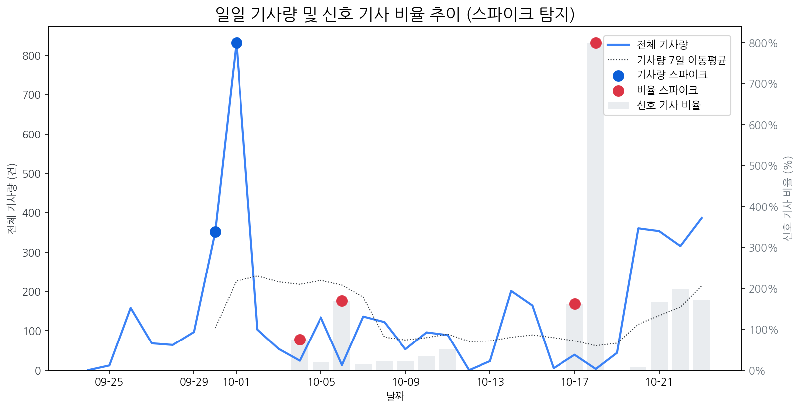

| 날짜 | 기사량 | Z-Score |
|---|---|---|
| 2025-09-30 | 351건 | 2.04 |
| 2025-10-01 | 832건 | 2.1 |
| 날짜 | 비율 | Z-Score |
|---|---|---|
| 2025-10-04 | 75.00% | 2.27 |
| 2025-10-06 | 169.23% | 2.05 |
| 2025-10-17 | 161.54% | 2.15 |
| 2025-10-18 | 800.00% | 2.22 |
| 급등 신호 | 오늘 언급량 | 어제 대비 증가 | 모멘텀(z_like) |
|---|---|---|---|
| lg | 28 | 14 | 3.44 |
| 게이밍 | 10 | 5 | 2.66 |
| 현대모비스 | 5 | 5 | 2.32 |
| 애플 | 15 | 5 | 2.25 |
| tsmc | 5 | 5 | 2 |
| 삼성 | 29 | 4 | 1.87 |
| 삼성디스플레이 | 4 | 4 | 1.63 |
| samsung | 3 | 3 | 1.55 |
| 모멘텀 토픽 | z_like 점수 | 누적 언급량 |
|---|---|---|
| lg | 3.44 | 335 |
| 게이밍 | 2.65 | 28 |
| 현대모비스 | 2.32 | 25 |
| 애플 | 2.25 | 126 |
| tsmc | 2 | 19 |
| 날짜 | 유형 | 제목 |
|---|---|---|
| 2025-10-23 | LAUNCH | LG, APEC 정상회의 전면 지원…구광모 회장 비롯 CEO 총출동 |
| 2025-10-20 | INVEST,ORDER | 中 모니터 시장도 '양보다 질'…SDC·LGD 수혜 기대 |
| 2025-10-22 | LAUNCH | MSI, 500Hz 초고주사율과 DP2.1을 탑재한 게이밍 모니터 'MPG 271QR QD- OLED ... |
| 2025-10-20 | LAUNCH | 인하대학교 이정환 교수 연구실 소속 학생들, 국제학술대회서 성과 인정 |
| 2025-10-23 | LAUNCH | 애플 폴더블 제품 출시 연기… 시장 진입 타이밍 놓치나 |